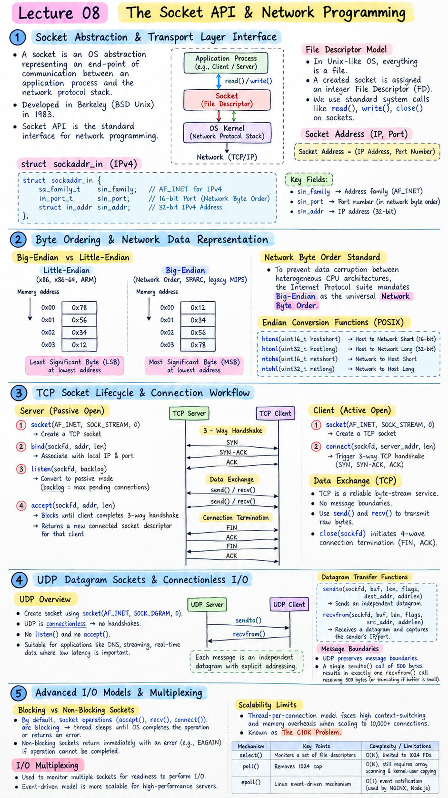

Short Notes & Visual Summary
Handwritten / quick summary notes for Lecture 08:

Click image to open high-resolution version in new tab
Socket Abstraction & Transport Layer Interface
1.1 The Socket Abstraction
A Socket is an operating system abstraction representing an end-point of communication between an application process and the network protocol stack. Developed as part of Berkeley Software Distribution (BSD Unix) in 1983, the Socket API serves as the standard interface for network programming.
1.2 Operating System File Descriptor Model
In Unix-like operating systems, "everything is a file". A created socket is assigned an integer File Descriptor (FD). Applications read from and write to sockets using standard system call interfaces (e.g., read(), write(), close()).
1.3 Address Structs: sockaddr & sockaddr_in
Socket operations require specifying IP addresses and port numbers using C structures defined in <netinet/in.h>:
struct sockaddr_in {
sa_family_t sin_family; // AF_INET for IPv4
in_port_t sin_port; // 16-bit Port (Network Byte Order)
struct in_addr sin_addr; // 32-bit IPv4 Address
};
Byte Ordering & Network Data Representation
2.1 Big-Endian vs. Little-Endian Architectures
Computer architectures store multi-byte integers in memory differently:
- Little-Endian (x86, x86-64, ARM): Stores the least significant byte (LSB) at the lowest memory address.
- Big-Endian (Network Order, SPARC, legacy MIPS): Stores the most significant byte (MSB) at the lowest memory address.
2.2 Network Byte Order Standard
To prevent data corruption during network transmission between heterogeneous CPU architectures, the Internet Protocol suite mandates Big-Endian as the universal Network Byte Order.
2.3 Conversion Functions (htons, htonl, ntohs, ntohl)
htons(uint16_t hostshort): Host to Network Short (16-bit, for Port numbers).htonl(uint32_t hostlong): Host to Network Long (32-bit, for IPv4 addresses).ntohs(uint16_t netshort): Network to Host Short.ntohl(uint32_t netlong): Network to Host Long.
TCP Socket Lifecycle & Connection Workflow
3.1 Passive Server Workflow (bind, listen, accept)
A TCP server follows a structured sequence of system calls to establish passive listening queues:
socket(AF_INET, SOCK_STREAM, 0): Allocates a TCP stream socket descriptor.bind(sockfd, addr, len): Associates the socket with a specific local IP address and port number.listen(sockfd, backlog): Converts socket to passive mode;backlogdefines max pending connections.accept(sockfd, addr, len): Blocks until a client completes 3-way handshake; returns a new connected socket descriptor dedicated to that client.
3.2 Active Client Workflow (connect)
A TCP client creates a socket and calls connect(sockfd, server_addr, len), triggering the 3-way TCP handshake (SYN, SYN-ACK, ACK) with the remote server.
3.3 Reliable Stream Data Exchange (send, recv, close)
TCP is a byte-stream service with no message boundaries. Calls to send() and recv() transmit raw bytes. Calling close(sockfd) initiates TCP 4-wave connection termination (FIN, ACK).
UDP Datagram Sockets & Connectionless I/O
4.1 UDP System Call Overview
UDP sockets are created with socket(AF_INET, SOCK_DGRAM, 0). Because UDP is connectionless, there are no handshakes, no listen(), and no accept() calls.
4.2 Datagram Transfer (sendto & recvfrom)
Every UDP message must explicitly specify destination addressing metadata on every call:
sendto(sockfd, buf, len, flags, dest_addr, addrlen): Sends an independent datagram.recvfrom(sockfd, buf, len, flags, src_addr, addrlen): Receives a datagram and captures the sender's IP/port.
4.3 Preservation of Message Boundaries
Unlike TCP byte-streams, UDP preserves message boundaries. A single sendto() call of 500 bytes results in exactly one recvfrom() call receiving 500 bytes (or truncating if buffer is too small).
Advanced I/O Models & Multiplexing
5.1 Blocking vs. Non-Blocking Sockets
By default, socket operations (accept(), recv(), connect()) are blocking: the executing thread sleeps until the OS kernel completes the operation or returns an error.
5.2 Scalability Limits of Thread-Per-Connection
Spawning one thread per connected client suffers severe context-switching and memory overheads when scaling to 10,000+ concurrent connections (The C10K Problem).
5.3 I/O Multiplexing (select, poll, epoll)
select(): $O(N)$ linear scanning of file descriptor sets; limited to 1024 descriptors by default.poll(): Removes 1024 cap, but still suffers $O(N)$ kernel-user copying and array scanning.epoll(): Linux $O(1)$ event-notification mechanism. Kernel uses callbacks to populate an event list; used by high-performance servers like NGINX and Node.js.
Original PDF Notes
Below is the original PDF document for reference: